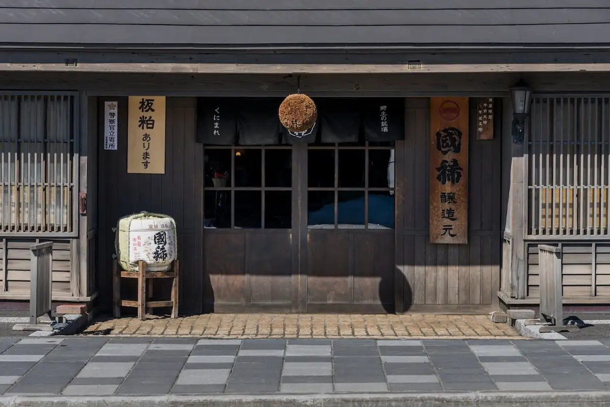
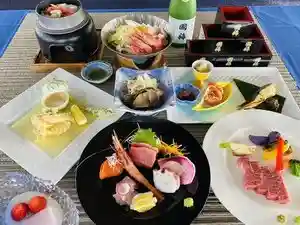
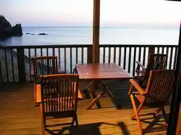
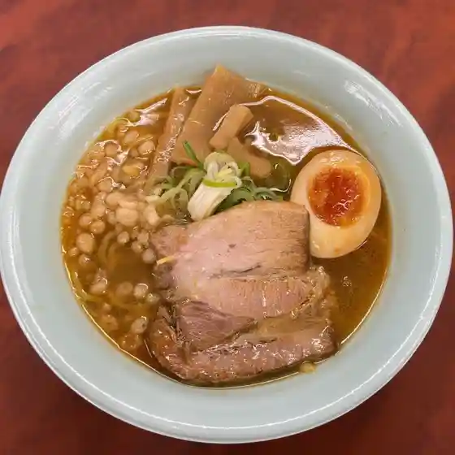
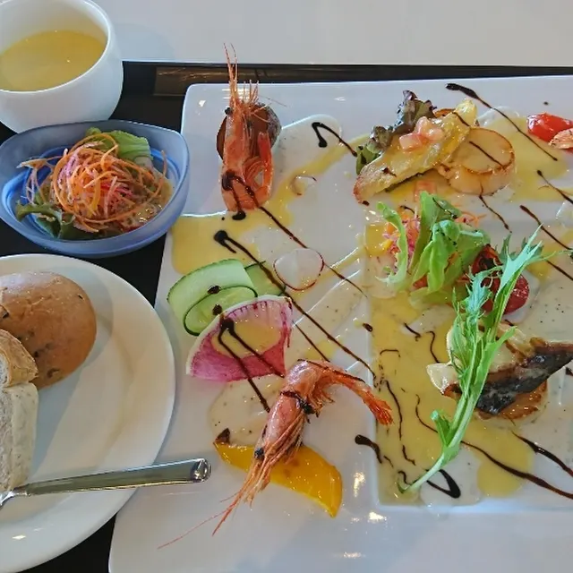
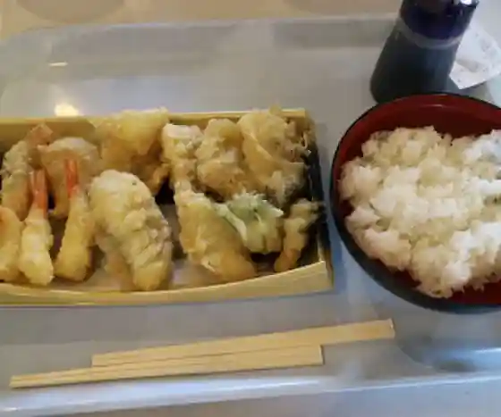
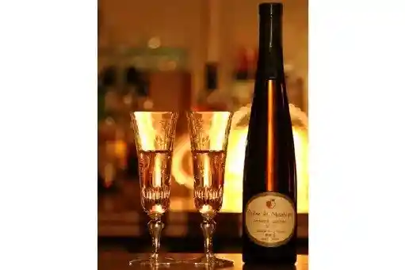

Mashike
Mashike · Hokkaido
Mashike
Highlighted on the Hokkaido map.

Stay
オーベルジュましけ

Ooberuju Mashike
岩尾温泉宿（夕陽荘）

Iwao Onsenyado ( Yuuhi Sou )
Dining
麺屋 田中商店

Men Ya Tanaka Shouten
ましけ

Mashike
港町通りオアシス無料休憩所

Minatomachi Touri Oashisu Muryoukyuukeijo
丹保旅館

Tan Ho Ryokan
民宿きやま

Minshuku Kiyama
尾久果樹園

Oku Kajuen
まあめいど

Maameido
関山豆腐店

Sekiyama Toufu Mise
民宿たけうち
Minshuku Takeuchi
国稀酒造
Kuni Mare Shuzou
陣屋
Jinya
石山精肉店
Ishiyama Seinikuten
増毛フルーツワイナリー
Mashike Furuutsuwainarii
孝子屋ぐるめ食品
Takako Ya Gurume Shokuhin
港町市場 増毛店
Minatomachi Shijou Mashike Mise
松ノ倉
Matsu No Kura
田中青果 増毛店
Tanaka Seika Mashike Mise
岩尾温泉宿 夕陽荘
Iwao Onsenyado Yuuhi Sou
カフェドゥソバ 凜
Kafedousoba Rin
スカンピン
Sukanpin
レストハウス雄冬
Resutohausu Ofuyu
新川民宿
Shinkawa Minshuku
三國本家
Mikuni Honke
ろばた
Robata
Sights
Kuni Mare Shuzo
Kuni Mare Shuzo
Mashike Furutsuwainarii

Mashike Furutsuwainarii